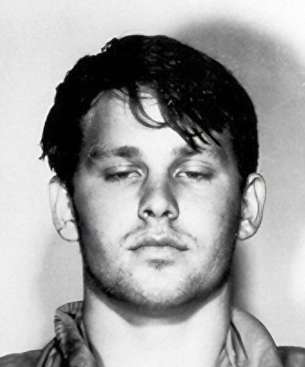

Hey Jude begins its nine week run at number one
The Beatles' "Hey Jude" reached number one on the Billboard Hot 100 on September 28, 1968, launching the longest chart topping run of any Beatles single.
Written by Paul McCartney to comfort John Lennon's son Julian during his parents' divorce, the seven minute single held the top spot for nine straight weeks and became the best selling record of the decade, per Billboard.
September 28 at a Glance
Tap any event to jump straight to its full card below.
John Lennon re-records Cold Turkey with Eric Clapton
John Lennon and the Plastic Ono Band gathered at Trident Studios in London on September 28, 1969, to re-record "Cold Turkey" with Eric Clapton on guitar, Klaus Voormann on bass and Ringo Starr on drums.
Lennon had scrapped an earlier attempt at EMI Studios three days before, and this Trident session produced the master used for the finished single, one more turn for a member of the Beatles already deep into life after the band.
Hey Jude begins its nine week run at number one
The Beatles' "Hey Jude" reached number one on the Billboard Hot 100 on September 28, 1968, launching the longest chart topping run of any Beatles single.
Written by Paul McCartney to comfort John Lennon's son Julian during his parents' divorce, the seven minute single held the top spot for nine straight weeks and became the best selling record of the decade, per Billboard.
Pioneering DJ Dewey Phillips dies at 42
Memphis radio disc jockey Dewey Phillips, whose WHBQ show Red, Hot and Blue gave rock and roll some of its earliest airplay, died of heart failure on September 28, 1968, at age 42.
Phillips had famously given Elvis Presley his radio debut back in 1954, spinning "That's All Right" on the air the same week it was recorded and helping launch the sound that would define the decade that followed.
Gladys Knight and the Pips release I Heard It Through the Grapevine
Motown's Soul label released Gladys Knight and the Pips' version of "I Heard It Through the Grapevine" on September 28, 1967, produced by Norman Whitfield.
The record became Motown's biggest selling single to that point, topping the R&B chart and climbing to number two on the Billboard Hot 100.
The Beatles dub the orchestra onto I Am the Walrus
Back at EMI Studios on September 28, 1967, George Martin dubbed the orchestral and choral parts recorded the day before onto an earlier take of "I Am the Walrus", while the band also finished new mono mixes of "Flying".
The session locked in the finished, chaotic master that would anchor the psychedelic rock soundtrack to Magical Mystery Tour two months later, according to The Beatles Bible.
The Rolling Stones headline two shows at Ardwick's ABC Theatre
The Rolling Stones played two shows at the ABC Theatre in Ardwick, Manchester on September 28, 1966, with the Yardbirds and Ike and Tina Turner opening the bill.
A young Jimmy Page was in the Yardbirds' lineup that night, playing to a crowd that had just watched the Stones' "Have You Seen Your Mother, Baby, Standing in the Shadow?" climb the charts.
The Rolling Stones play two nights at Cardiff's Capitol Theatre
The Rolling Stones played the first of two shows at the Capitol Theatre in Cardiff, Wales on September 28, 1965, touring behind their new worldwide number one.
"(I Can't Get No) Satisfaction" had just topped the charts on both sides of the Atlantic, turning the band's UK dates that autumn into a scramble for tickets.
Dottie West records Before the Ring on Your Finger Turns Green
Country singer Dottie West cut "Before the Ring on Your Finger Turns Green" at RCA Victor's Nashville studio on September 28, 1965, with Chet Atkins producing.
Written by Felice and Boudleaux Bryant, the song became a top 40 country hit that November and helped cement West's run as one of Nashville's leading female voices.
A Ray Charles concert erupts into a riot in Dallas
A Ray Charles concert at Dallas Memorial Auditorium turned into a riot on September 28, 1964, after an employee announced during a long intermission that the IRS had seized the night's gate receipts.
The furious crowd smashed roughly 27 plate glass windows and tore up the ticket booths, and police in riot gear had to restore order before the night was out, per D Magazine.
The Rolling Stones play two shows at the Odeon in Romford
The Rolling Stones played two shows at the Odeon Cinema in Romford, Essex on September 28, 1964, partway through their fourth British Invasion tour of the year.
The band had just scored their first UK number one with "It's All Over Now", and the Bobby Womack cover was still anchoring their live set that autumn.
Jim Morrison gets arrested in Tallahassee
A 19 year old college student named Jim Morrison was arrested for disturbing the peace and stealing a police officer's helmet during a Florida State-TCU football game in Tallahassee on September 28, 1963.
It was the future Doors frontman's first brush with the law, a small preview of the chaos that would follow him once he became rock's most notorious wild card.

The Rolling Stones play Walthamstow Assembly Hall
The Rolling Stones performed at Assembly Hall in Walthamstow, north London, on September 28, 1963, deep into a run of UK package tour dates that put them in front of screaming crowds nightly.
Mick Jagger, Keith Richards, Brian Jones, Bill Wyman and Charlie Watts were still riding the momentum of their debut single, a cover of Chuck Berry's "Come On", released that summer.
The Beatles play their 136th Cavern Club lunchtime show
The Beatles gave their 136th lunchtime performance at Liverpool's Cavern Club on September 28, 1962, just weeks after cutting "Love Me Do" for Parlophone.
The tight, sweaty club sets sharpened the band's stage act right before Britain got its first real taste of them on record, according to The Beatles Bible.
The Beatles close out the Royal Iris riverboat shuffle
The Beatles topped the bill for the last of four riverboat shuffle shows aboard the MV Royal Iris ferry on the River Mersey on September 28, 1962, with Lee Castle and the Barons opening.
The floating gigs were a Cavern Club tradition dreamed up by owner Ray McFall, and this one closed out just as "Love Me Do" prepared to hit shops the following week.
Dr. Kildare premieres on NBC
NBC premiered the medical drama Dr. Kildare on September 28, 1961, starring a young Richard Chamberlain as the title intern.
The show made Chamberlain a teen idol and briefly pushed him into a pop singing career, including the Billboard top ten hit "Theme from Dr. Kildare".
The Beatles play Litherland Town Hall
The Beatles played a local gig at Litherland Town Hall in Liverpool on September 28, 1961, the same hall where a frenzied teenage crowd had first mobbed them like stars back in December 1960.
The group played the venue while their first released recording, "My Bonnie" with Tony Sheridan, was already turning up on Merseyside jukeboxes that same autumn.
Frequently Asked Questions
What happened in 1960s music on September 28?
September 28 produced sixteen verified music events across nine of the decade's ten years, headlined by The Beatles' "Hey Jude" reaching number one on the Billboard Hot 100 in 1968.
The same date saw four different Rolling Stones UK concerts across four separate years, the Beatles finish mixing "I Am the Walrus", and a Ray Charles concert erupt into a riot in Dallas.
When did Hey Jude reach number one?
The Beatles' "Hey Jude" reached number one on the Billboard Hot 100 on September 28, 1968, and held the top spot for nine straight weeks, the longest run of any Beatles single.
Paul McCartney wrote it to comfort John Lennon's son Julian during his parents' divorce.
Why was Jim Morrison arrested in Tallahassee?
Jim Morrison was arrested on September 28, 1963, for disturbing the peace and stealing a police officer's helmet during a Florida State-TCU football game, two years before he co-founded The Doors.
It was his first arrest, long before he became one of rock's most notorious frontmen.
What caused the Ray Charles riot in Dallas?
A Ray Charles concert at Dallas Memorial Auditorium turned into a riot on September 28, 1964, after an employee announced during intermission that the IRS had seized the night's gate receipts.
The angry crowd smashed roughly 27 plate glass windows before riot police restored order.
When did the Beatles finish I Am the Walrus?
The Beatles dubbed the orchestral and choral overdubs onto "I Am the Walrus" at EMI Studios on September 28, 1967, the day after the orchestra and Mike Sammes Singers were originally recorded.
The same session produced new mono mixes of "Flying" for the Magical Mystery Tour soundtrack.
What song did Gladys Knight and the Pips release on September 28, 1967?
Gladys Knight and the Pips released "I Heard It Through the Grapevine" on Motown's Soul label on September 28, 1967.
It became Motown's biggest selling single to that point, hitting number one on the R&B chart and number two on the Billboard Hot 100.